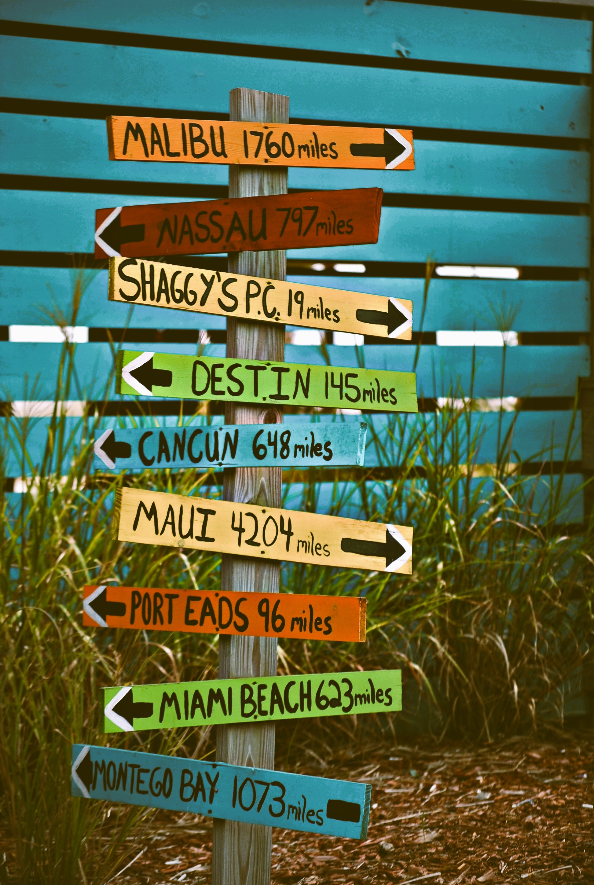
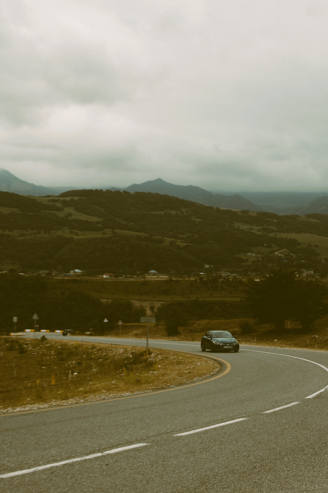
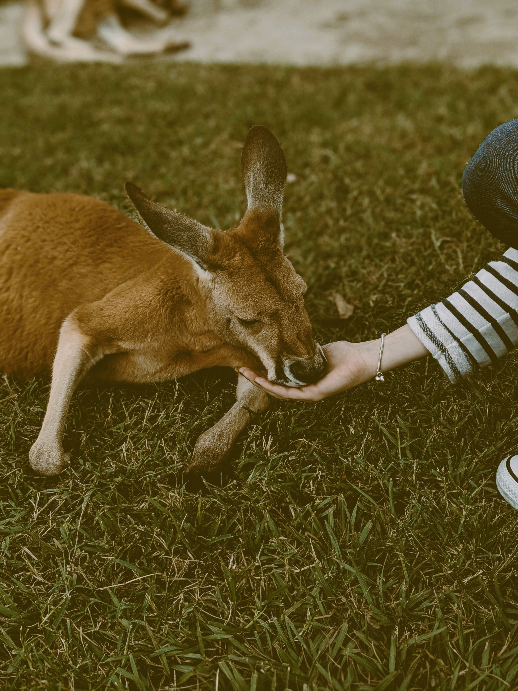
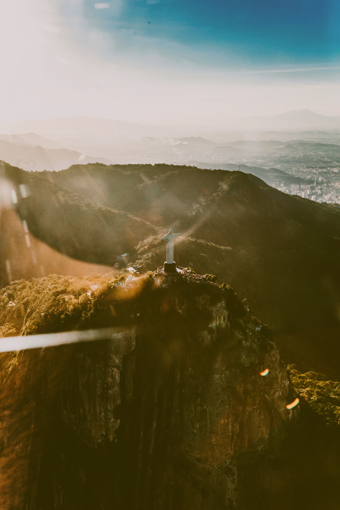
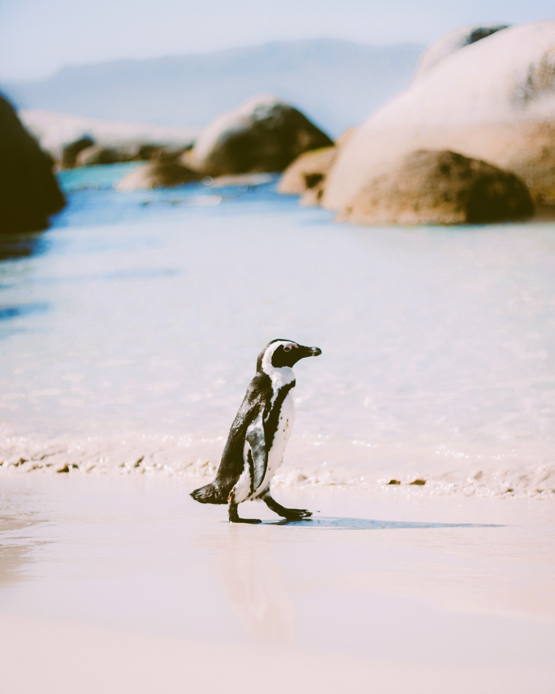

DESTINATION KNOWLEDGE EXPERTS
At Globe Travels, we take immense pride in being your trusted
destination knowledge experts. We believe that understanding the
destinations we offer is the cornerstone of crafting exeptional
travel experiences.
Our team comprises dedicated travel enthusiasts who have
explored the globe extensively. We have firsthand knowledge of the
destinations we recommend and we go beyond the surface to uncover the
local secrets and hidden gems to make each destination unique.
Our local connections and partnerships enable us to provide you with
insights and experiences that you won't find in guidebooks.
CUSTOMIZED KEEPSAKES
We understand that your travel memories are not just about photographs
but also about the stories they tell. That's why we offer customized
keepsake options, such as photo books, canvas prints and travel journals,
allowing you to relive your journey through tangible, artistic creations.
With Globe Travels, your memories are more than just fleeting moments,
they are timeless treasures waiting to be captured. Our expert photography
services ensure that your travel experiences are not forgotten but transformed
into vivid, lasting memories that you can revisit and share for generations to
come.
OFF THE BEATEN PATH ADVENTURES
For those seeking truly remote and pristine landscapes, we offer
off the beaten path adventures to lesser-known, yet equally stunning
destinations. These journeys provide a sense of discovery and tranquility
that can be hard to find in more popular tourist spots.
With Globe Travels you are not just visiting landscapes, you are becoming
a part of them. We create experiences that awaken your senses, rejuvenate
your spirit and inspire a deeper connection with the natural world.
DESTINATION EXPERTISE

At Globe Travels, our foremost skill is our unparalleled destination
expertise. Our team of seasoned travel professionals is well-versed in
the nuances of every destination we offer. We possess in-depth knowledge
about the local culture, history, climate and hidden gems that make each place
unique. This expertise allows us to craft tailored itineraries that ensure
you get the most out of your travel experience.
Whether you're seeking a cultural immersion, and adventure in the great
outdoors or a relaxing beach getaway, our destination expertise guarantees
that your journey will be memoarable and authentic.
CUSTOMER-CENTRIC SERVICE
Exeptional customer service is a cornerstone of Global Travels. Our skill
in providing customer-centric service sets us apart. We understand that
each traveler is unique, and we take the time to listen to your
preferences and desires. From the moment you inquire about a trip to the
day you return home, we a dedicated to making your journey as seamless and
stress-free as possible.
Our 24/7 support ensures that you are never alone during travels, and
we are always ready to assist with any questions och request.
TAILOR ITINERARY DESIGN

Crafting tailor-made itineraries is a skill we excel at. We take pride
in our ability to create personalized travel experiences that align
with you interests, budget and schedule. Whether you are an adventure
enthusiast, a history buff, a foodie or a relaxation seeker, we have the
skills to design an itinerary that perfecly matches your preferences.
Our meticulous planning ensures that every day of your journey is
optimized for enjoyment, allowing you to explore, relax, and savor the
moment.
RESPONSIBLE AND SUSTANABLE TRAVEL

Another skill that sets Globe Travels apart is our commintment to
responsible and sustanable travel. We understand the importance of
preserving the beauty and integrity of the destinations we visit.
Our team has the expertise to curate trips that minimize enviromental
impact, support local communities, and promote eco-friendly practices.
We are skilled at offering opportunities for travelers to engage in
responsible tourism, such as wildlife conservation, cultural preservation,
and sustainable travel initiatives, ensuring that your journeys contribute
positively to the places you visit.
RIO DE JANEIRO/BRAZIL
Where Rhythms and Landscapes Unite

Welcome to the "Cidade Maravilhosa" or the "Marvelous City" - Rio De Janeiro!
Nestled along the sun-kissed shores of Brazil, this vibrant destination is
where natural beauty, cultural richness and infectious energy come together
in perfect harmony.
Our adventure begins with the soft sands of Copacabana and Ipanema beaches
beneath our feet. As we soak in the sun's warmth and watch the Atlantic Ocean'
waves dance along the shore, it is easy to se why these beaches are world-renowned...
Read More
PARIS/FRANCE
The City of Lights and Love

Paris is a city that lingers in your memories long after you've departed.
Its timeless beauty, romantic ambiance and cultural richness create an
experience that is both unforgettable and deeply moving.
Whether you're strolling down the Seine, sipping wine at a sidewalk café,
or exploring historic neighborhoods, Paris has a way of capturing your
heart and leaving you enchanted...
Read More
CAPE TOWN/SOUTH AFRICA
Where Nature and Culture Converge

Cape Town is a city where nature and culture converge seamlessly.
Whether you're exploring its natural wonders, delving in its rich history,
savoring its culinary delights or simply relaxing on its prestine beaches,
Cape Town has something for every traveler.
As you plan your next adventure, consider Cape Town, a destination that
promises to leave you spellbound with its beauty and captivated by its
culture. Your journey awaits in this extraordinary city that effortlessly
blends the best of the natural world with the vibrancy of urban life...
Read More